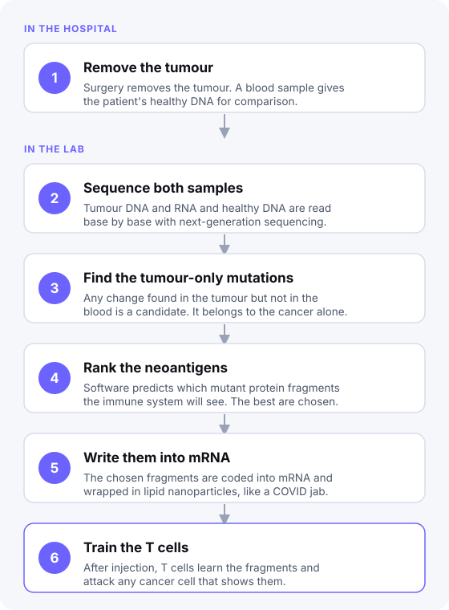

Contents
- From COVID jabs to cancer
- Why every tumour is different
- How a personalised vaccine is made
- The evidence so far
- Side effects
- The NHS Cancer Vaccine Launch Pad
- Frequently asked questions
- Conclusion
- References
From COVID jabs to cancer
In 2021 I wrote about the COVID-19 vaccines. In that post I mentioned that the mRNA technology behind the Pfizer-BioNTech and Moderna jabs could prove very useful in future research. Five years later, the same two companies are using it to build cancer vaccines, and the first large trial has just reported.
A cancer vaccine like this does not stop you getting cancer. It is a treatment. It is given to a patient who already has cancer, usually after surgery, to teach their immune system to find and kill any cancer cells left behind. What makes it unusual is that each vaccine is made for one person. No two patients get the same vaccine.
Why every tumour is different
Cancer starts when a cell picks up mutations in its DNA that let it grow out of control. As a tumour grows it collects many more mutations, and almost all of them are unique to that one patient. Two people with the same type of melanoma will share very few of the same mutations.
Some of these mutations change the proteins the cancer cell makes. Cells cut their proteins into short fragments and display them on their surface, where T cells check them. A fragment made from a mutated protein is called a neoantigen, meaning "new antigen". Healthy cells never display it, so in principle the immune system should treat it as foreign and attack [1].
In practice tumours often hide from the immune system, and T cells rarely learn to recognise neoantigens on their own. A personalised vaccine tries to fix that by showing the immune system exactly which neoantigens to look for.
How a personalised vaccine is made

The process starts with the tumour removed during surgery and a blood sample. The lab sequences the DNA of both. The blood gives the patient's normal DNA, so any change found in the tumour but not in the blood is a mutation that belongs to the cancer alone.
Not every mutation makes a useful target. Software predicts which mutant fragments will be displayed on the cell surface and recognised by T cells. This depends on the patient's HLA type, the set of molecules that present fragments to T cells, which also differs from person to person. The highest-ranked fragments are chosen. The Moderna and Merck vaccine encodes up to 34 of them in a single mRNA molecule [3].
From here it works just like the COVID jab. The mRNA is wrapped in lipid nanoparticles and injected. The patient's cells read the mRNA and make the neoantigen fragments, and T cells learn to attack any cell that displays them. The difference is the target. The COVID vaccine taught the immune system to recognise one viral spike protein. This vaccine teaches it to recognise one patient's tumour.
Steps 2 to 4 are the part I know best. My neoantigen pipeline does the same calling of tumour-only variants and prediction of MHC binding, using mouse RNA-seq data. Getting from raw reads to a short list of good candidates is the hardest computational step, and it has to be done again for every single patient.
The evidence so far
Melanoma: intismeran autogene
Intismeran autogene, first known as mRNA-4157 or V940, is made by Moderna and Merck. In a Phase 2b trial of 157 patients with stage III or IV melanoma, adding the vaccine to the immunotherapy drug pembrolizumab (Keytruda) cut the risk of the cancer returning or the patient dying by 44%. That result was enough for the FDA to give it Breakthrough Therapy Designation in February 2023 [2].
The large Phase 3 trial, INTerpath-001, reported in 2026. It enrolled 1,137 patients whose stage IIB to IV melanoma had been completely removed by surgery. Two thirds received the vaccine plus pembrolizumab, and one third received a placebo plus pembrolizumab [3]. The vaccine was given every 3 weeks for up to 9 doses.
After a median follow-up of 24.6 months, the vaccine group had a 42% lower risk of recurrence or death (hazard ratio 0.58) and a 38% lower risk of the cancer spreading to distant organs (hazard ratio 0.62) [3][4]. The results were presented at the ESMO 2026 Congress and have been accepted by the New England Journal of Medicine [3].
Overall survival, whether patients actually live longer, has not been reported yet. The trial continues to follow patients to answer that question [4]. The vaccine is not approved anywhere yet.
Pancreatic cancer: autogene cevumeran
Pancreatic cancer is one of the hardest cancers to treat, and it was thought to have too few mutations for a vaccine to work. BioNTech and Genentech tested their personalised vaccine, autogene cevumeran, in 16 patients at Memorial Sloan Kettering after surgery. All 16 received the vaccine with the immunotherapy drug atezolizumab, and 15 of them then went on to chemotherapy [1].
Half of the patients, 8 out of 16, made a strong T cell response to the vaccine. After a median follow-up of 18 months, the non-responders' cancer had come back after a median of 13.4 months. In the responders it had not yet come back in enough patients to calculate a median [1]. A follow-up at just over 3 years found the vaccine-trained T cells were still present and working [5]. This is a very small trial without a control group, so it cannot prove the vaccine caused the difference. A larger randomised Phase 2 trial, IMcode003, is now running [6].
Not every trial works
In August 2026 BioNTech stopped a Phase 2 trial of autogene cevumeran in bowel cancer. That trial gave the vaccine on its own, without another immunotherapy drug, to patients with traces of tumour DNA in their blood. The trial had already crossed its futility boundary in October 2025, meaning it was unlikely to show a benefit. The independent Data Safety Monitoring Board then found a numerical imbalance in overall survival between the two arms and judged that continuing was unlikely to change the result, so it recommended ending the trial. No new safety problems were found, and BioNTech says it will publish a full analysis later [6]. It is a reminder that a promising result in one cancer does not carry over to every other cancer.
Table 1: The two leading personalised mRNA cancer vaccines | Source: [1], [3], [6]| Vaccine | Companies | Main cancer | Given with | Stage reached |
|---|---|---|---|---|
| Intismeran autogene | Moderna, Merck | Melanoma | Pembrolizumab | Phase 3 met its goals (2026) |
| Autogene cevumeran | BioNTech, Genentech | Pancreatic | Atezolizumab and chemotherapy | Phase 2 running. Bowel cancer trial stopped (2026) |
Side effects
In INTerpath-001, side effects linked to treatment were common in both groups: 95.8% of patients on the vaccine and pembrolizumab, against 90.0% on pembrolizumab alone. Serious side effects, grade 3 or higher, were close between the two groups at 14.2% and 13.4%. The companies reported no new safety concerns [3]. Most of the serious side effects come from pembrolizumab, which can make the immune system attack healthy organs.
The NHS Cancer Vaccine Launch Pad
The UK is one of the main places these vaccines are being tested. The NHS Cancer Vaccine Launch Pad, set up by NHS England and Genomics England in partnership with BioNTech, finds NHS patients who could be eligible for a cancer vaccine trial and refers them to a hospital that runs one [7]. It has recruited 622 patients so far [8].
Trials through the Launch Pad have already run in bowel cancer, melanoma, and head and neck cancer, and all three are now closed to new patients. At the moment, patients with bowel cancer or non-small cell lung cancer are being invited, if their hospital takes part and their cancer is at a particular stage [8]. If you or someone you know is having cancer treatment in England, you can ask the care team whether a vaccine trial is open to you.
Frequently asked questions
Can this vaccine stop me getting cancer?
No. It is made from your own tumour, so it can only be made after you have cancer. It is a treatment that aims to stop the cancer coming back.
How is it different from the HPV vaccine?
The HPV vaccine prevents infection with a virus that can cause cancer, and everyone gets the same vaccine. A personalised cancer vaccine targets mutations in one person's tumour and is different for every patient.
Can I get it on the NHS now?
Only by joining a clinical trial. No personalised cancer vaccine has been approved yet.
Does the mRNA change my DNA?
No. As with the COVID-19 vaccines, the mRNA is read by the cell to make protein fragments and then breaks down. It never enters the nucleus where your DNA is kept.
Conclusion
I am not a medical professional, and none of this is medical advice. My interest comes from the computational side. I have built pipelines that find neoantigen candidates, and it is exciting to see that kind of work turn into a treatment that is reaching patients.
The melanoma result is the first time a personalised mRNA cancer vaccine has worked in a large randomised trial. The open questions are whether it helps people live longer, whether it works in other cancers, and whether it can be made quickly and cheaply enough for every patient who needs one. I will be following the overall survival results and the pancreatic trial closely.
References
[1] Rojas, L.A. et al. (2023). Personalized RNA neoantigen vaccines stimulate T cells in pancreatic cancer. Nature, 618, pp.144–150. Available at: https://doi.org/10.1038/s41586-023-06063-y [Accessed 17 Nov. 2026]
[2] Ryan, C. (2023). FDA Grants Breakthrough Therapy Designation to mRNA-4157/V940 Plus Pembrolizumab in High-Risk Melanoma. [online] OncLive. Available here [Accessed 17 Nov. 2026]
[3] CancerNetwork (2026). Intismeran Plus Pembrolizumab Reduces Recurrence Risk in Resected Melanoma. [online] Available here [Accessed 17 Nov. 2026]
[4] AACR (2026). From Promise to Proof: Personalized Melanoma mRNA Vaccine Delivers Phase III Success. [online] Available here [Accessed 17 Nov. 2026]
[5] Sethna, Z. et al. (2025). RNA neoantigen vaccines prime long-lived CD8+ T cells in pancreatic cancer. Nature, 639. Available at: https://doi.org/10.1038/s41586-024-08508-4 [Accessed 17 Nov. 2026]
[6] BioNTech (2026). BioNTech Provides Update on Phase 2 Clinical Trial of Autogene Cevumeran in Resected Colorectal Cancer. [online] Available here [Accessed 17 Nov. 2026]
[7] NHS England. NHS Cancer Vaccine Launch Pad. [online] Available here [Accessed 17 Nov. 2026]
[8] University of Southampton Clinical Trials Unit. NHS Cancer Vaccine Launch Pad (CVLP). [online] Available here [Accessed 17 Nov. 2026]